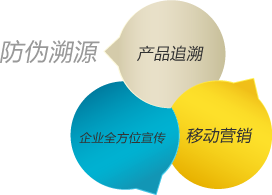

二维码防伪溯源是用二维码加密技术给产品做标识，同时也带动消费者积极参与到打假和共同监督商品安全问题中。同时切入防伪溯源+移动营销的概念，在追溯产品生产环节和销售地区的同时也可以了解企业其他产品信息，起到宣传企业的作用，加速企业品牌传播。
国办发（2015）95号文件强调：应用物联网、云计算等技术加快建设追溯体系，实现产品来源可查、去向可追、责任可究。
商秩发（2017）53号文件强调：到2020年，初步建成全国上下一体、协同运作的重要产品追溯管理体制、统一协调的追溯标准体系和追溯信
息服务体系；部门、地区和行业企业追溯信息初步实现互通共享和通查通识。
国家政策
市场环境
行业竞争
企业管理
品牌营销
溯源平台服务内容
大数据分析管理
溯源系统安全性
多光谱防伪
子母防伪
RFID电子标签
赋码控制设备
灵活多变的赋码生产线
农产品行业
食品行业
服饰行业
酒类行业
药品行业
乳制品行业
进口商品行业
其他行业
每个商品都有一个对应的唯一二维码和编号，数据库里的每个商品都包含生产商名称、生产地点、生产日期、准许销售地区等产品详细信息。 把二维码印刷
或粘贴在商品包装上，用二维码识读器扫描产品上的二维码即可查看产品真伪信息和溯源， 同时了解更多产品和企业信息，形成互动营销和数据统计。
防伪标签，是每一件产品的身份证，我们希望它能帮助企业在产品的生产、流通、销售、售后提供合面的数据支撑与应用。依托中心12年的防伪经验及技术
研发，我们将防伪在产品生态中数据价值全面开放给各个防伪成员企业，实现多平台连接，数据共享。让企业在互联网时代享受更多云的便捷与好处。
完美对接微信接口，实现粉丝用户信息与防伪数据相关联，支持多微信帐号互通。
完美对接微博官方接口，实现微博私信查询防伪服务。
一行代码即可在企业官网部署专有的防伪验证功能，提供多语言版本。无域名跳转，无接入难度。
百兆带宽
全平台
CDN加速
无限存储
空间
多端客服
支持
服务器
安全加固
24小时
不间断服务
三网互通
保障服务
定时备份